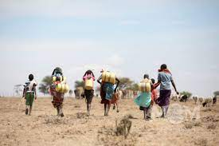

1. The Daily Struggle
Women and children walking long distances to fetch water from a distant source.
In many African communities, the task of fetching water falls primarily on women and children. Every day, they embark on arduous journeys, sometimes walking for several hours, to reach the nearest water source. These sources are often located miles away from their homes, and the journey is not only exhausting but also dangerous, as they are exposed to harsh weather conditions and potential threats from wildlife or even human predators. The time spent on these treks takes away from other productive activities such as education, farming, and community building, perpetuating the cycle of poverty and hardship.
2. Contaminated Sources
African community members collecting water from a contaminated source, risking health issues.
Access to clean water is a significant challenge in many parts of Africa. Often, the only available sources of water are rivers, ponds, or unprotected wells, which are highly susceptible to contamination. These water sources can be polluted by agricultural runoff, industrial waste, and human and animal feces, leading to a high risk of waterborne diseases. Collecting and consuming contaminated water exposes communities to illnesses such as cholera, dysentery, and typhoid fever, which are particularly deadly for young children and the elderly. The lack of clean water infrastructure exacerbates these health risks, making safe drinking water a luxury rather than a necessity.
3. Impact on Health

Children suffering from waterborne diseases due to lack of access to clean water.
The health impacts of water scarcity and contamination are profound. In areas without access to clean water, the prevalence of waterborne diseases is alarmingly high. Children are particularly vulnerable, often suffering from diarrhea, dehydration, and malnutrition as a result of unsafe water. These conditions can lead to stunted growth, impaired cognitive development, and, in severe cases, death. The healthcare systems in many African countries are ill-equipped to handle the high incidence of water-related illnesses, leading to preventable suffering and mortality. Moreover, the burden of illness places additional strain on families, reducing their ability to work and thrive economically.
4. Innovative Solutions

Community-driven initiatives such as rainwater harvesting and well construction helping alleviate water scarcity.
Despite the challenges, many African communities are finding innovative solutions to address water scarcity. Rainwater harvesting systems, which collect and store rainwater for later use, provide a sustainable source of clean water. Additionally, the construction of deep wells and boreholes taps into underground aquifers, supplying water that is less likely to be contaminated. These projects are often spearheaded by local leaders, non-governmental organizations, and international aid groups, emphasizing the importance of community involvement and ownership. Education on water conservation and hygiene practices also plays a crucial role in ensuring the long-term success of these initiatives, empowering communities to manage their resources effectively.
5. Advocacy and Awareness

Local activists raising awareness and advocating for clean water access as a basic human right.
Advocacy and awareness are vital components in the fight against water scarcity. Local activists and organizations work tirelessly to raise awareness about the critical need for clean water access, framing it as a basic human right. Through campaigns, educational programs, and public demonstrations, they highlight the dire consequences of water scarcity and call for action from governments and international bodies. These efforts aim to secure funding for water infrastructure projects, influence policy changes, and mobilize communities to demand their right to safe drinking water. The global recognition of water scarcity as a pressing issue has also led to increased collaboration and support from international partners, fostering hope for a future where every African community has access to clean, safe water.